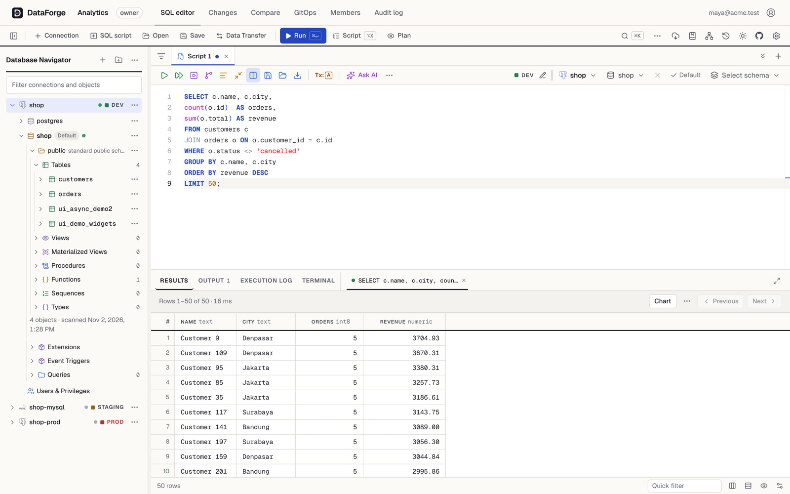
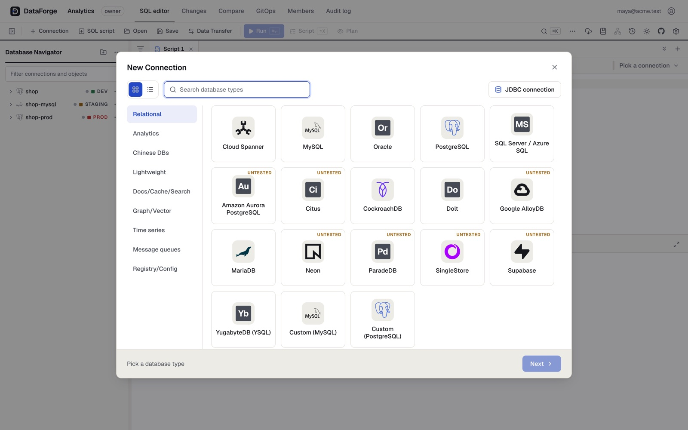
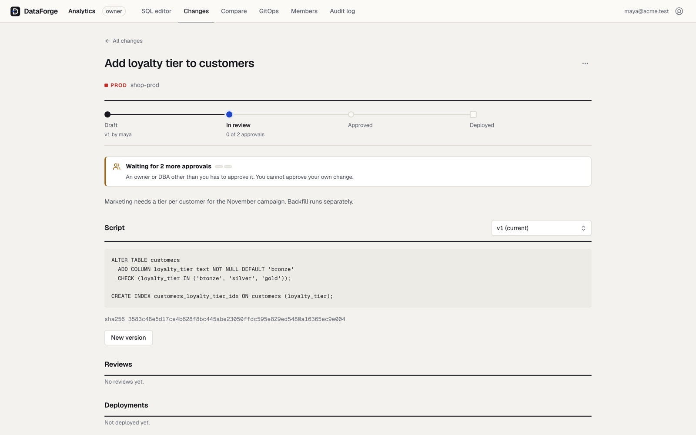

Navigator gaya DBeaver
- Folder koneksi bersarang, logo engine, schema → tabel → kolom
- Diagram ER per schema, export SVG/PNG
- Compare schema dan data, lengkap dengan DDL migrasi
- Table designer, routine, user & role, server dashboard
Database client, review perubahan, dan asisten AI dalam satu workspace. Jelajahi dan query 50 engine; setiap perubahan ke prod di-review dulu, lalu di-deploy persis seperti yang disetujui.
Gratis · Apple silicon · versi 0.1.0
Directlangsung jalan, konfirmasi untuk yang berbahaya
Directsama, dengan kredensial tulis sendiri
Approvalchange request, dua reviewer

Hubungkan, query, review, deploy, lalu minta AI menulis draf.
Dipakai berjam-jam setiap hari oleh data engineer, DBA dan developer. Padat tapi tenang; status keamanan selalu terlihat tanpa jadi berisik.


Setiap engine dijelaskan oleh descriptor di registry. 28 sudah diuji dengan container sungguhan; sisanya dibangun dari dokumentasi vendor dan diberi tanda sampai ada yang mengujinya.
Driver Go native, tanpa JDBC. Server yang kompatibel protokol bisa dipakai lewat Custom (MySQL) atau Custom (PostgreSQL).
Setiap environment punya aturannya sendiri. Di prod, perubahan berjalan di rute yang tetap: draft, review, approve, deploy, dan setiap langkahnya tercatat di audit log.
| Write mode | Default | Perilaku |
|---|---|---|
| Direct | Dev Staging | SQL jalan dengan kredensial tulis; DROP, TRUNCATE, UPDATE tanpa WHERE minta konfirmasi. |
| Approval | Prod | Setiap write jadi change request yang di-review. |
| Read-only | — | Hanya query. |

Asisten AI mati secara default. Saat dinyalakan, ia melihat metadata schema, bukan kredensial atau host. SQL yang mengubah data selalu jadi usulan, tidak pernah dijalankan otomatis.
Tulis pertanyaan dalam bahasa biasa; jawabannya SQL berlabel draf yang bisa kamu pakai di editor atau jadikan change request.
Sudah berlangganan Claude dan kerja di Claude Code atau Claude Desktop? Sambungkan ke DataForge dengan satu perintah; login lewat browser, token tidak disalin ke mana pun.
Versi awal 0.1.0. App macOS untuk client pribadi; server untuk tim yang butuh review dan audit bersama.
Apple silicon. Semua sudah di dalam: API, PostgreSQL untuk metadata, SQLite dan DuckDB. Tidak perlu Docker.
Unduh .dmgAPI Go, PostgreSQL untuk metadata, dan web UI Next.js. Tim membukanya di browser, dari macOS, Windows atau Linux.
Bisa. Dengan write mode Direct, DataForge adalah database client pribadi: DML dan DDL langsung jalan, dengan mode auto-commit atau manual. Approval baru dipakai di environment yang kamu set begitu.
Asisten melihat metadata schema (nama tabel dan kolom), tanpa baris, kredensial atau host. Mode agent bisa mengambil contoh maksimal 20 baris dengan kolom sensitif di-mask, dan query-nya tetap lewat akun read-only. Semuanya mati sampai owner menyalakannya.
Tidak di dalam DataForge: Anthropic tidak mengizinkan app pihak ketiga memakai login claude.ai, jadi Ask AI memakai API key. Tapi kalau kamu kerja di Claude Code atau Claude Desktop dengan langgananmu, sambungkan lewat MCP dan Claude bisa memakai DataForge dari sana.
Engine itu dibangun dari dokumentasi vendor dan memakai protokol yang sudah teruji (mis. PostgreSQL atau MySQL), tapi belum dijalankan terhadap server aslinya. Ia tetap bisa dipakai, dengan tanda yang jelas.
App desktop baru untuk macOS (Apple silicon). Di Windows dan Linux, jalankan server dan buka DataForge di browser.
App belum ditandatangani dan dinotarisasi Apple. Klik kanan DataForge.app → Open → Open, cukup sekali.